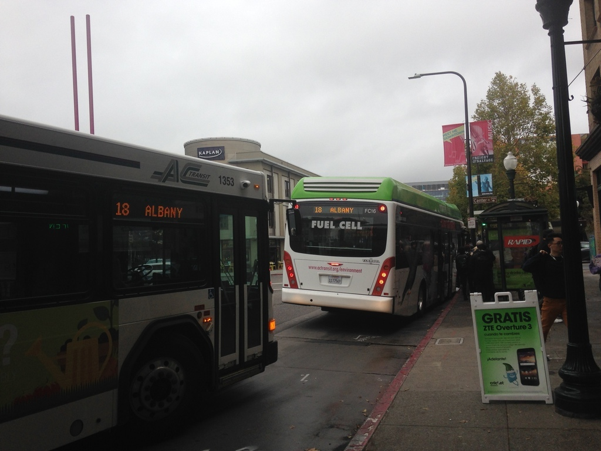

Buses are bosons, or How I learned to stop worrying and love AC Transit (Part one)
Mon 19 March 2018
If you have spent any amount of time using mass transit, you know the frustration of waiting for the better part of an hour for a bus to arrive, only to see two or three of them roll up in quick succession. This phenomenon is a common enough problem that it has a name: "bus bunching":

In this two-part series, we'll investigate bus bunching by making a mathematical model of a bus route. In this first part, we'll construct the model and find it's equilibrium solution. In the second part, we'll demonstrate the inevitability for that model to bunch.
Let's start by constructing a model for the speed of a single bus. We will assume that the bus has a fixed route, on which it travels all day. That route may be on any number of different streets, go wending through different neighborhoods, and generally make very little sense (like my beloved 12 line). However, if it travels back and forth on this same route, we can model it as a loop, and its position on that loop can be mapped to an angle on a circle \(\theta\). We can then identify the speed of the bus with the time derivative of \(\theta\).
The simplest model for \(d\theta/ dt\) is for the bus to travel at a constant speed \(v_0\):
Or, expressed in a simulation:
Now, this model isn't very interesting. There is only a single bus, and it is traveling at a fixed speed, so it has no hope of exhibiting the kind of bunching behavior that we want to explain.
A typical mass transit route operates multiple buses with a given headway, the distance (or time) between successive vehicles on the route. If everything is operating according to the plan, the headway from one bus to the next should be approximately constant, with possible scheduled variations depending on the time of day (such as increased frequency during rush hour, or decreased frequency at night).
We can increase the complexity of our model adding some more buses so that there are \(N\) on the route:
In this equation the subscript indicates the \(n\)th bus out of \(N\), so a simulation with five buses looks like this: Okay, so this is starting to more closely resemble a bus route. However, the buses are still moving at a constant speed, and have no effect on each other. In order for our model to exhibit the richer characteristics of a system that can bunch, there must be some way for their speed to be a function of conditions on the road.
There are many factors that can control the speed of a bus traveling through town, including traffic, construction, scheduled layovers, and the number of passengers. In order to keep the model simple, we will focus on the last factor: the number of passengers who board and exit the bus. A traveling bus constantly picks up and drops off passengers as it makes its way around its route. This process takes time (as anyone who has watched a passenger fumble with change upon boarding knows). A bus that boards and deposits more passengers will, in general, make slower progress along its route.
Many things affect the number of passengers boarding a given bus, including time-of-day, scheduling, and population density. In order to keep the model as simple as possible, we will ignore those and concentrate on a single factor: the amount of time since the previous bus. We will assume that as more time passes, more passengers arrive at a bus stop for pickup. If a bus falls behind schedule, more people will have arrived at each stop, meaning that it will be further slowed down by the excess passengers. In the following analysis, we will use the distance between buses as a proxy for the number of passengers that need to be picked up.
We need to augment our model to account for this slowing-down behavior. The expression for speed in equation \eqref{constant} is a constant, so the next-simplest expression is to make it linear in the distance between buses (our proxy for the number of passengers):
In this equation, a bus picking up no passengers travels at \(v_0\) (which happens if there has been no time for them to accumulate since the previous bus). As the distance between a bus and the one ahead of it increases, the speed of the bus slows down, reflecting the additional time spent boarding and disembarking. The dimensionless parameter \(\gamma\) determines how sensitive the bus speeds are to differences in headway.
Equation \eqref{evolution} is a set of ordinary differential equations (one equation for each of the \(N\) buses). It will be the primary evolution equation for our system of buses, which we will analyze by answering the following two questions.
-
Is there an equilibrium solution to these equations? That is to say, is there a solution that does not evolve in time?
-
If there is an equilibrium solution, is it stable? A stable solution, when perturbed, will return to the equilibrium. An unstable one will get further and further from equilibrium until the buses are bunched.
Strictly speaking, an equilibrium solution does not exist for the system of equations as described: as long as the buses have a nonzero velocity, their positions will evolve in time. However, with a slight reframing of the question it makes sense to talk about an equilibrium: is there a configuration for which the bus velocities are constant, and that the distance between them (headways) are not changing?
In a coordinate system traveling with the buses at equilibrium speed the solution to the system would then look like this:
It seems intuitive that an equilibrium solution, if it exists, should have the buses equally spaced, so let's start looking for a solution of that form. Let's further guess that the equilibrium velocity is the base bus speed \(v_0\). A change of coordinates makes this system a bit easier to reason about. Let's boost ourselves into moving a coordinate system \(\psi\), defined by:
From this we can also get the relations
Substituting these into equation \eqref{evolution}, we get the governing equations in terms of \(\psi_n\):
When the buses are equally spaced around the loop, then the distance between them is the whole loop length divided between the number of buses, or \(\psi_{n+1} - \psi_n = 2 \pi/N\), which makes the governing equations in the \(\psi\) coordinates
Unless the interaction term \(\gamma\) is zero, the time evolution of \(\psi_n\) is nonzero, making this configuration a non-equilibrium solution to the system. Therefore, \(v_0\) is not the equilibrium velocity.
This should make sense, as we defined \(v_0\) to be the speed of the bus in the absence of any delays due to loading and unloading of passengers. When we include that delay, the buses will be slower. Instead, let's construct a speed for buses that takes into account the delay due to passengers.
Again we presume that the buses are equally spaced, such that the distance between them is \(2 \pi/N\). Then, given the evolution equation \eqref{evolution}, we can calculate the speed \(v_e\):
Let's boost into a new coordinate system \(\phi\), defined by
Substituting this into equation \eqref{evolution}, we find
As before, when the buses are equally spaced, \(\phi_{n+1} - \phi_n = 2 \pi/N\):
The right-hand-side is exactly \(v_e\), so we can subtract it from both sides to get
This is exactly what we wanted: in the \(\phi\) coordinate system, the positions of the buses are constant in time, so equally-spaced buses are all in equilibrium.
In order to get a feel for the equilibrium solution, you can experiment with this interactive simulation, which shows the buses traveling at their equilibrium speed and spacing (in the \(\phi\) coordinate system that moves with them).
You can see that as the number of buses increases and the headway between the buses gets smaller, the equilibrium speed increases, reflecting the decreased number of passengers each has to pick up.
At this point we have answered the first of the two above questions: there is an equilibrium solution. In the next installment of this series, we are going to answer the second question: is this equilibrium solution stable? (Spoiler: it's not.)